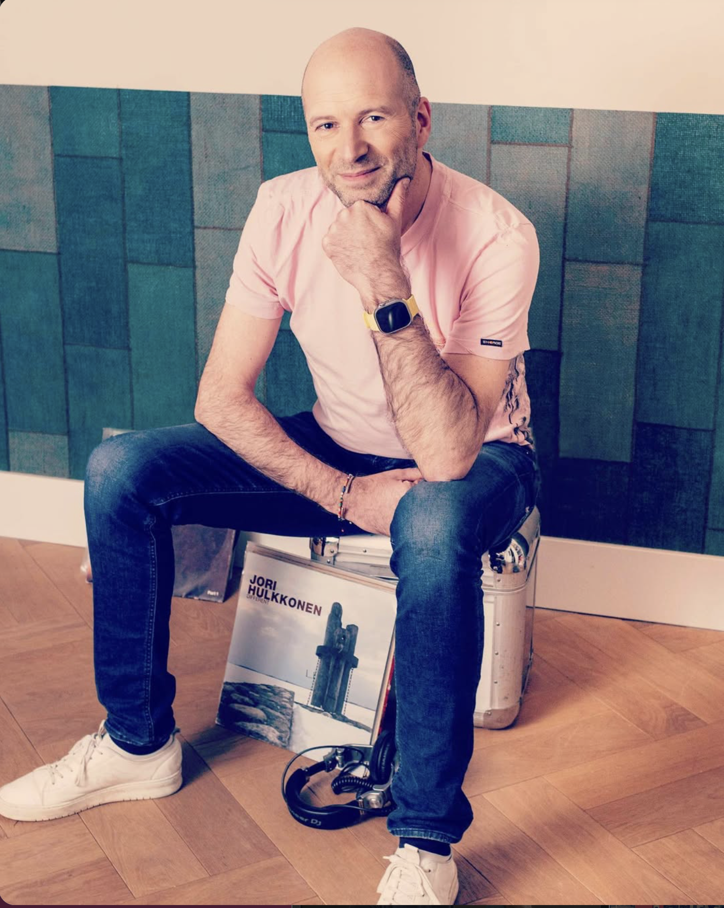

DE OPDRACHT
Maarten Versteeg is al jaren aangesloten bij Architects in Music, dat DJ’s plaatst op bijzondere locaties en evenementen. Zijn werk loopt van luxe cocktailbars en skylounges tot beachclubs en corporate events.
Een muzikale lijn door meerdere decennia

Sfeerbeeld · vervangbaarDJ-sets voor luxe cocktailbars, skylounges, beachclubs en corporate events.
Maarten Versteeg is al jaren aangesloten bij Architects in Music, dat DJ’s plaatst op bijzondere locaties en evenementen. Zijn werk loopt van luxe cocktailbars en skylounges tot beachclubs en corporate events.
Elke set krijgt een zorgvuldige opbouw: van warm-up naar een gevarieerde mix van deephouse, 90’s house, disco en latin. De selectie beweegt tussen genres en decennia zonder de lijn van de avond kwijt te raken.
Zijn uitstraling achter de draaitafels is understated en rustig; muzikaal is hij avontuurlijk. In een tijd waarin social media de zichtbare performance soms meer aandacht geeft dan de muzikale inhoud, onderscheidt Maarten zich als connaisseur met een brede platenkennis en gevoel voor samenhang.
“Maarten verbindt meerdere decennia muziek naadloos aan elkaar. Zijn sets zijn avontuurlijk en gevarieerd, maar voelen toch als één geheel.”Architects in MusicA full circle event company with a focus on hospitality